Latest release
NetBeans Selection Management Tutorial I-Using a TopComponent’s Lookup
Last reviewed on 2025-10-28
This tutorial shows how to build a NetBeans Platform application with losely coupled modules: one that provides a selected object, and others that update components as the selection changes.
This tutorial is part 1 of a series and covers using a TopComponent’s Lookup. Part 2 explains selection for a single item (for example, one element in a tree view).
Introduction to Selection
Selection is crucial for complex applications. NetBeans has two basic concepts of selection:
-
The contents of the focused TopComponent's Lookup
-
The focused
TopComponent's activatedNode(s)
This tutorial covers only the Lookup portion of selection.
Selection allows for context-sensitive actions (enabled/disabled depending on selection), and palette windows such as the Property Sheet or Navigator components in the IDE, which display details of whatever is selected.
Each TopComponent exposes a Lookup — a Map from class to objects of that type, that other components can query.
This permits decoupling the components that provide some objects and the components that consume them, so they can be
implemented in separate modules. New editors for existing objects can be provided without changing the rest\
of the system.
Creating the NetBeans Platform Application Project
The example used in this tutorial will contain three modules constituting a NetBeans Platform application, as illustrated below:
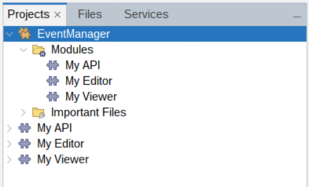
Lets start by creating the NetBeans Platform application that will contain all three modules.
-
Go to File > New Project. Under Categories, expand Java with Ant and select NetBeans Modules. Then select NetBeans Platform Application as Project type:
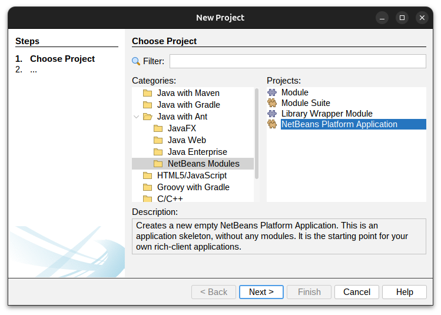
-
In the Name and Location panel, use
EventManageras the Project Name. Choose the location for the project on your computer: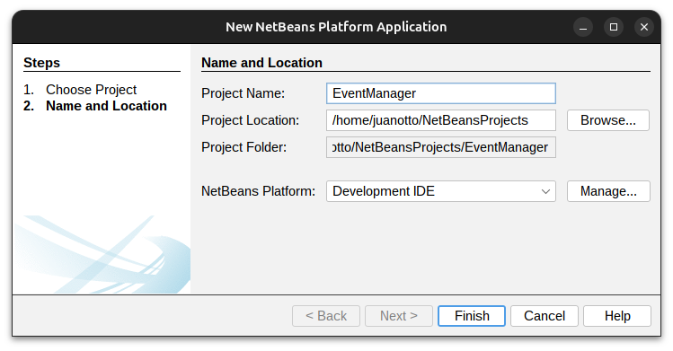
You now have a NetBeans Platform application project, which is the container for the modules that you will be creating throughout this tutorial:
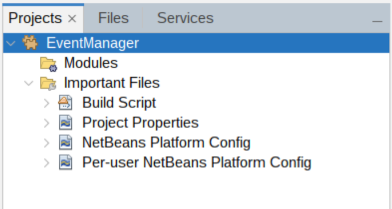
Via the configuration files shown in the screenshot above, the application has access to a window system and an action system. The configuration files also set up the application to be built via the Ant build system.
You will be adding three modules to the application. The first module will provide an API class, while the other two will both depend on that API module. That will ensure that the other two modules do not depend on each other, making them loosely coupled.
-
Go to File > New Project again. If not already open, under Categories, expand Java with Ant, and select NetBeans Modules. Under Projects, select Module:
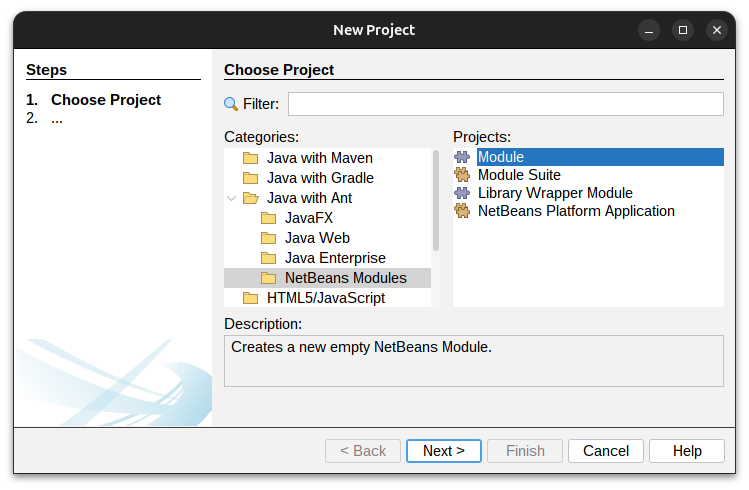
You could also do this by expanding the EventManagerproject node, right-click the Modules node, and then choose Add New. -
In the Name and Location panel, use
MyAPIas Project Name. Now look at the Project Location field and the Project Folder field. The default behavior is to create the module inside the directory of theEventManagerapplication, which means that the module’s sources will be organized within the folder where the application is defined. That is the standard way to organize the source code in NetBeans Platform application projects.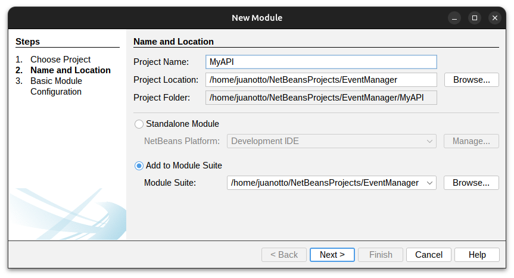
-
In the Basic Module Configuration panel, set the following values:
-
Code Name Base. The code name base is a string that uniquely identifies a module. By convention, the value of the code name base is the main package of the module. In this case, set the code name base to
org.myorg.myapi. That will be the string used to identify the module by other modules that will need to make use of code within this module. -
Module Display Name. Set the module display name to
My API. That is the text you will see displayed for the module in the Projects window in the IDE. -
Localizing Bundle. Leave the location of the localizing bundle with the default value, so that localization key/values will be stored in the main package, with the name
org/myorg/myapi. -
Generate OSGi Bundle. Leave this unchecked to use the NetBeans module system. There are two module systems are supported by the NetBeans Platform, the NetBeans module system and the OSGi framework. You can use OSGi if required to meet your business requirements, although we use the NetBeans module system in this tutorial series.
The result should be as follows:
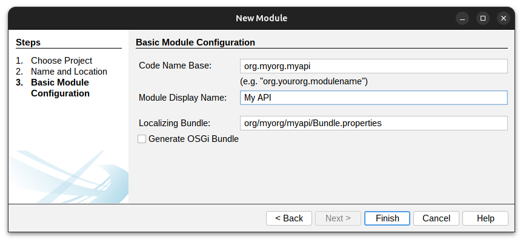
-
-
Create another two modules (repeat steps 3–5), using the following parameters:
-
Project Name: MyEditor, Code Name Base:
org.myorg.myeditor, Module Display Name: My Editor -
Project Name: MyViewer, Code Name Base:
org.myorg.myviewer, Module Display Name: My ViewerAt the end of this step, the structure of the application should be as follows:
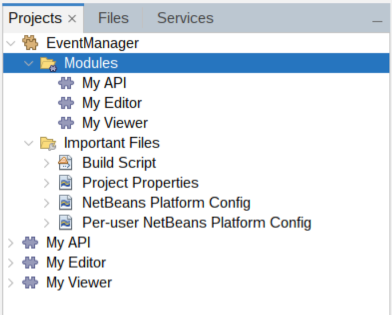
We split the project into three modules so the viewer and editor depend only on a shared API. This makes the viewer and editor losely coupled, which has many advantages.
-
Creating an API and Setting Up Dependencies
Now we’ll create a simple API class. In real applications, this API might represent files or other data. For this tutorial, we’ll create a simple "Event" object with a unique ID and a date.
-
Right click the
org.myorg.myapipackage and choose New > Java Class.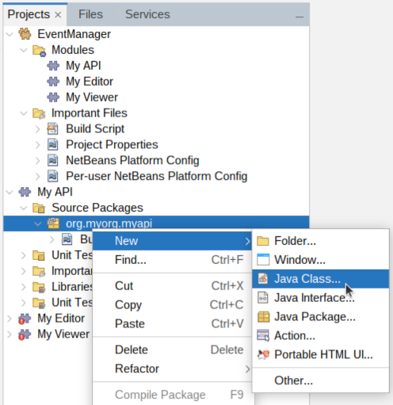
Name the class
Event: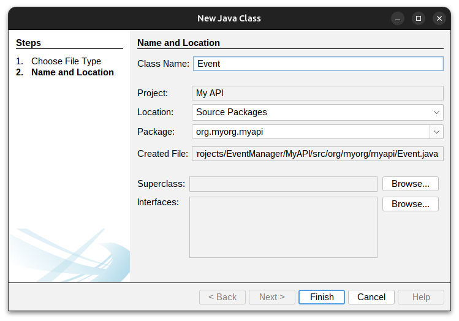
Replace the default code with the following:
package org.myorg.myapi; import java.time.ZonedDateTime; public final class Event { private final ZonedDateTime date = ZonedDateTime.now(); private static int count = 0; private final int index; public Event() { index = count++; } public ZonedDateTime getDate() { return date; } public int getIndex() { return index; } @Override public String toString() { return index + " - " + date.toString(); } }This is all the code for this module. Each time you create a new
Event, a counter is incremented to give each event a unique ID. -
Next, make your API module export the
org.myorg.myapipackage so other modules can see the Event class. By default, all packages are hidden from other modules. Right click the My API project and choose Properties. In the API Versioning page, check the checkbox fororg.myorg.myapiin the Public Packages list: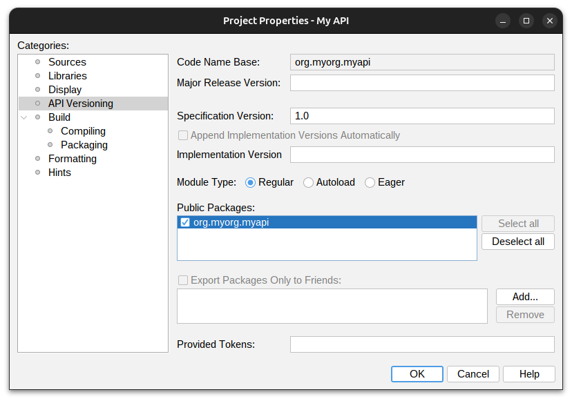
Now expand the Important Files node of the My API project and open the Project Metadata file (named
project.xmlon disk). Notice this section was added when you clicked OK:<public-packages> <package>org.myorg.myapi</package> </public-packages>When you compile the module, this information from
project.xmlis added to the module’s manifest file. -
Now set up dependencies between your modules. Both My Editor and My Viewer will use the
Eventclass, so they need to depend on the API module. Right-click the My Editor project and choose Properties. Select the Libraries tab.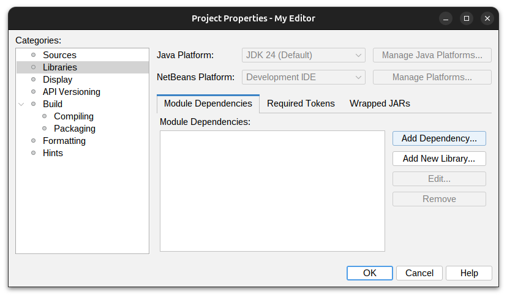
Click Add Dependency… and type
MyAPIin the filter. You’ll see the module appear: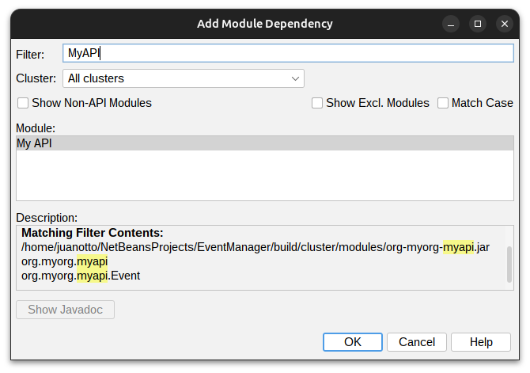
the Cluster combo-box can be used for filtering as well. You’ll see the module listed under Module Dependencies. Click
OKto close the dialog.Open the Project Metadata file in the Important Files node of the
My Editormodule. You’ll see this section was added:
<module-dependencies>
<dependency>
<code-name-base>org.myorg.myapi</code-name-base>
<build-prerequisite/>
<compile-dependency/>
<run-dependency>
<specification-version>1.0</specification-version>
</run-dependency>
</dependency>
</module-dependencies>Notice the code name base identifies the MyAPI module. When you compile the module, this information from project.xml
goes into the module’s manifest file.
Add the same dependency for the My Viewer module. Right-click the My Viewer project and select Properties. When finished, the module dependencies look like this in the Project window:
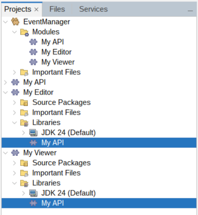
Creating the Viewer Component
Now you’ll create a singleton component that tracks if there’s an Event in the global selection. If there is, it will
display information about it. This is commonly used for master/detail views.
Generating a Singleton TopComponent
A "singleton component" is like the Projects window in NetBeans IDE - there’s only one of them in the system. The Window wizard generates all the code needed for a singleton component. You just need to provide the contents.
-
Right click the
org.myorg.myviewerpackage and choose New > Window to create a TopComponent for this module.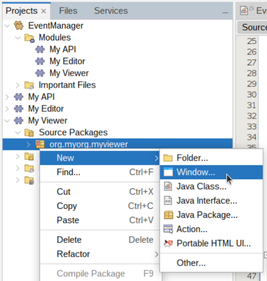
-
On the "Basic Settings" wizard, select
exploreras the window location and check "Open on Application Start" to open the window at startup: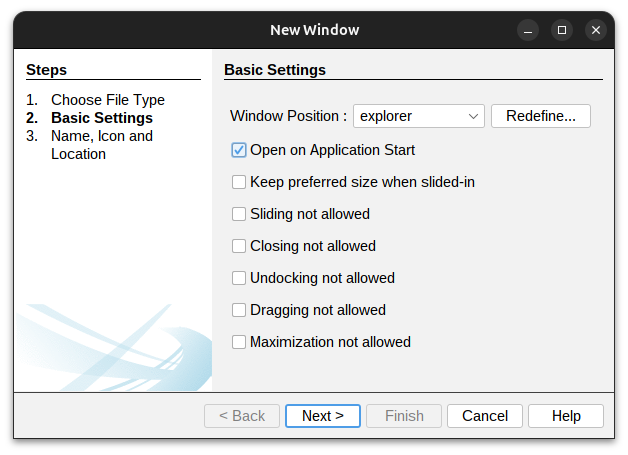
-
On the "Name, Icon and Location" page, set
MyVieweras the class name prefix: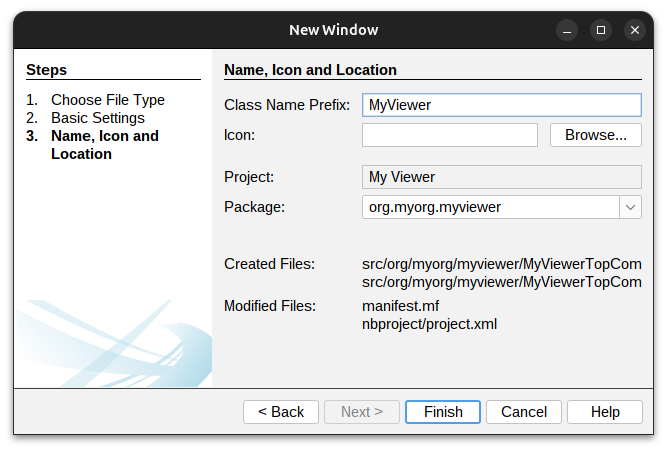
-
Click Finish and you should see the following:
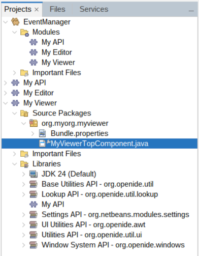
You now have a skeleton
TopComponentcalledMyViewerTopComponent. The wizard created the Java class and added the required module dependencies (under Libraries). -
Open the
MyViewerTopComponentfile and click the Source tab. The annotations at the top of the file registerMyViewerTopComponentin the layer file and create anActionfor opening it from the Window menu:@ConvertAsProperties( dtd = "-//org.myorg.myviewer//MyViewer//EN", autostore = false ) @TopComponent.Description( preferredID = "MyViewerTopComponent", //iconBase="SET/PATH/TO/ICON/HERE", persistenceType = TopComponent.PERSISTENCE_ALWAYS ) @TopComponent.Registration(mode = "explorer", openAtStartup = true) @ActionID(category = "Window", id = "org.myorg.myviewer.MyViewerTopComponent") @ActionReference(path = "Menu/Window" /*, position = 333 */) @TopComponent.OpenActionRegistration( displayName = "#CTL_MyViewerAction", preferredID = "MyViewerTopComponent" ) @Messages({ "CTL_MyViewerAction=MyViewer", "CTL_MyViewerTopComponent=MyViewer Window", "HINT_MyViewerTopComponent=This is a MyViewer window" })
Creating a Context Sensitive TopComponent
Click the Design tab to open the "Matisse" GUI Builder (the form editor). You’ll add two labels to display information
about the selected Event.
-
Drag two Labels (javax.swing.JLabel) from the Palette to the form, one below the other:
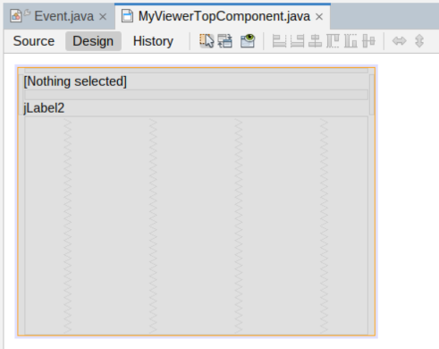
Select the first label and press F2, change the text to
[Nothing selected]as shown above. -
Click the Source button to switch to the code editor. Change the class signature so
MyViewerTopComponentimplementsLookupListener:public final class MyViewerTopComponent extends TopComponent implements LookupListenerRight-click in the editor and choose Fix Imports to import
LookupListener.A lightbulb icon will appear in the editor margin. Click it to see the popup:
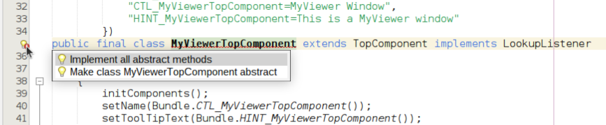
Select the text "Implement all abstract methods" on the context menu that appears. Now you have a class that implements
LookupListener(it implements theresultChangedmethod). You need something to listen to.There’s a global
Lookupobject that proxies the Lookup of whatever component has focus - you can get it by callingUtilities.actionsGlobalContext(). Instead of tracking focus yourself, you can listen to this global selectionLookup, which fires changes whenever focus changes. -
Edit the
MyViewerTopComponentsource to add a lookup result member and implement thecomponentOpened,componentClosed, andresultChangedmethods:private Lookup.Result<Event> result = null; @Override public void componentOpened() { result = Utilities.actionsGlobalContext().lookupResult(Event.class); result.addLookupListener (this); } @Override public void componentClosed() { result.removeLookupListener(this); } @Override public void resultChanged(LookupEvent lookupEvent) { Collection<? extends Event> allEvents = result.allInstances(); if (!allEvents.isEmpty()) { Event event = allEvents.iterator().next(); jLabel1.setText(Integer.toString(event.getIndex())); jLabel2.setText(event.getDate().toString()); } else { jLabel1.setText("[Nothing selected]"); jLabel2.setText(""); } }-
componentOpened()is called whenever the component is made visible by the window system;componentClosed()is called whenever the user clicks the X button on its tab to close it. So whenever the component is showing, you want it to be tracking the selection - which is what the above code does. -
The
resultChanged()method is your implementation ofLookupListener. Whenever the selectedEventchanges, it will update the two `JLabel`s you put on the form.The required import statements for the
MyViewerTopComponentare as follows:
import java.util.Collection; import org.myorg.myapi.Event; import org.netbeans.api.settings.ConvertAsProperties; import org.openide.awt.ActionID; import org.openide.awt.ActionReference; import org.openide.util.Lookup; import org.openide.util.LookupEvent; import org.openide.util.LookupListener; import org.openide.windows.TopComponent; import org.openide.util.NbBundle.Messages; import org.openide.util.Utilities; -
Creating the Editor Component
Now you need something to provide Event instances for the viewer. You’ll do this in the My Editor module, keeping with
the goal of loose coupling between components.
You’ll create another TopComponent that opens in the editor area and provides an Event from its Lookup. The
TopComponents are singletons by default but changing that is easy.
-
Add dependencies to the My Editor module so it can find the classes you’ll use.
Right click the My Editor project and choose Properties. On the Library page of the Project Properties dialog box, click the Add Dependency button, and type
TopComponentin the Filter textbox. The dialog should automatically suggest setting a dependency on the Window System API. Do the same thing forLookups(Lookup API). Also set a dependency on the Utilities API, Base Utilities API, and UI Utilities API, which provide various helpful supporting classes that are made available by the NetBeans Platform.You can select more than one dependency at a time using Ctrl + left-click. For example, you could select both Utilities API and UI Utilities API based off a filtered search for "Utilities". You’ll have six total dependencies (MyAPI from earlier, plus the five you just added):
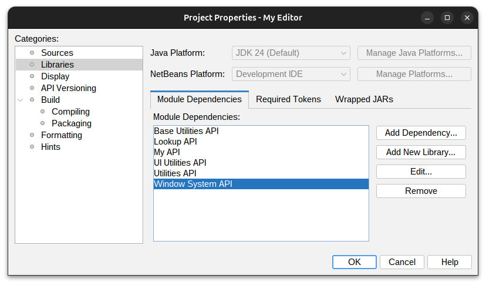
You can also see these in the Libraries node of the My Editor project.
-
Right-click the
org.myorg.myeditorpackage and choose New > Window like you did forMyViewer. Chooseeditorfor Windows Position and check Open on Application Start. UseMyEditorfor Class Name Prefix.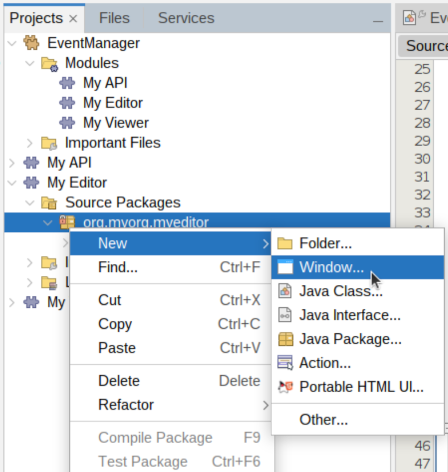
-
When the form editor opens, add two Text Fields (javax.swing.JTextField), one above the other.
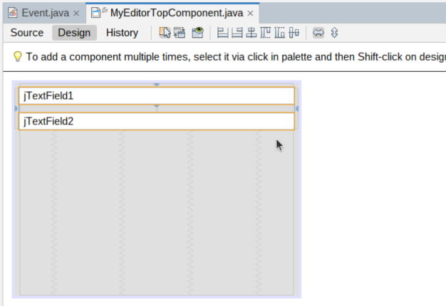
In the property sheet, set both text fields' "editable" property to
false. -
We want to allow the user to open more than one window. Click the Source tab to switch to the code editor and delete the
preferredIDfrom the@TopComponent.Descriptionannotation on top of the class.@ConvertAsProperties( dtd = "-//org.myorg.myeditor//MyEditor//EN", autostore = false ) @TopComponent.Description( //"preferredID" deleted here! //iconBase="SET/PATH/TO/ICON/HERE", persistenceType = TopComponent.PERSISTENCE_ALWAYS ) @TopComponent.Registration(mode = "editor", openAtStartup = true) @ActionID(category = "Window", id = "org.myorg.myeditor.MyEditorTopComponent") @ActionReference(path = "Menu/Window" /*, position = 333 */) @TopComponent.OpenActionRegistration( displayName = "#CTL_MyEditorAction", preferredID = "MyEditorTopComponent" ) @Messages( { "CTL_MyEditorAction=MyEditor", "CTL_MyEditorTopComponent=MyEditor Window", "HINT_MyEditorTopComponent=This is a MyEditor window" }) public final class MyEditorTopComponent extends TopComponent -
Add this code to the constructor after the
initComponents()statement:Event obj = new Event(); associateLookup(Lookups.singleton(obj)); jTextField1.setText ("Event #" + obj.getIndex()); jTextField2.setText ("Created: " + obj.getDate()); setDisplayName ("MyEditor " + obj.getIndex()); -
Right-click in the editor and choose Fix Imports. The imports should look like this:
import org.myorg.myapi.Event; import org.openide.awt.ActionID; import org.openide.awt.ActionReference; import org.openide.util.NbBundle; import org.openide.util.lookup.Lookups; import org.openide.windows.TopComponent;The line
associateLookup(Lookups.singleton(obj));creates aLookupcontaining one object - the newEventinstance. This becomes whatMyEditor.getLookup()returns. While this is a simple example, you can imagineEventrepresenting a file, database entity, or anything else you want to edit or view. You could also have a component that lets you select or edit multipleEventinstances, which is covered in the next tutorial.To make the editor component interesting (though it doesn’t actually edit anything), you set the text fields to display values from the
Event.
Running the Code
Now you’re ready to run the tutorial. Right click EventManager and choose Run. When the IDE opens, choose
Window > Open Editor to invoke your action. Do this a few times to open several editor components. Your MyViewer
window should also be open. Notice how the MyViewer window content changes as you click different tabs:
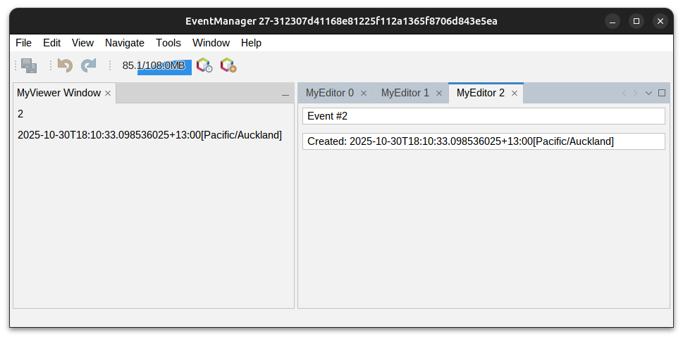
If you click in the Viewer window or close all editor windows, the text changes to "[no selection]".
If you don’t see the MyViewer window, you probably didn’t check the "open on system start" checkbox in the
wizard. Go to the Window menu and choose MyViewer to display it.
|
So, What’s the Point?
The key point is how the code is split into three modules: My Viewer knows nothing about My Editor, and either can run independently. They only share a dependency on My API. This means:
-
My Viewer and My Editor can be developed and shipped independently
-
Any module can provide a different editor and the viewer will work with it, as long as the new editor offers an
Eventfrom its Lookup
To understand the value, imagine Event is something complex - say MyEditor is an image editor and Event represents
an image being edited. You could replace MyEditor with an SVG vector editor, and the viewer (showing image attributes)
would work transparently with the new editor. This is why you can add tools for Java files to NetBeans — they remain
compatible across NetBeans versions, and the same components and actions continue to work with alternative editors for
Java (like the form editor).
This is how NetBeans works with source files. The editor’s Lookup contains a DataObject,
and components like Navigator and Property Sheet watch what object the focused TopComponent provides.
This approach is also valuable when migrating existing applications to the NetBeans Platform. The data model object is probably existing, working code that shouldn’t change for NetBeans integration. By keeping the data model API in a separate module, NetBeans integration stays separate from core business logic.
Changing Selected Objects on the Fly
To show how powerful this approach is, you’ll add a button to your editor that replaces the Event with a new one
on the fly.
-
Open
MyEditorin the form editor (click the Design button) and drag aButton(javax.swing.JButton) to it. -
Set the button’s
textproperty to "Replace". -
Right click the
JButtonand choose Events > Action > actionPerformed.This opens the code editor with the cursor in an event handler method. Make the method call
updateContent():private void jButton1ActionPerformed(java.awt.event.ActionEvent evt) { updateContent(); }Add the missing method:
private void updateContent() { Event obj = new Event(); jTextField1.setText("Event #" + obj.getIndex()); jTextField2.setText("Created: " + obj.getDate()); setDisplayName("MyEditor " + obj.getIndex()); content.set(Collections.singleton (obj), null); }This is the same as the constructor code, except for the last line.
-
Add this field at the top of the class:
public class MyEditor extends TopComponent { private final InstanceContent content = new InstanceContent();InstanceContent lets you modify a Lookup’s content (specifically an
AbstractLookup) on the fly. -
Remove the constructor lines you added earlier, except for the call to
associateLookup(…). Change that line to:associateLookup (new AbstractLookup (content));Keep the standard initComponents()call -
Add a call to
updateContent()in the constructor, after the call toassociateLookup(). -
Right-click in the editor and choose Fix Imports. The imports should now look like:
import java.util.Collections; import org.myorg.myapi.Event; import org.netbeans.api.settings.ConvertAsProperties; import org.openide.awt.ActionID; import org.openide.awt.ActionReference; import org.openide.util.NbBundle.Messages; import org.openide.util.lookup.AbstractLookup; import org.openide.util.lookup.InstanceContent; import org.openide.windows.TopComponent;You’re now ready to run the Event Manager again. Right click EventManager again and choose Run.
When you click the Replace button, all components update, including the
MyViewerinstance: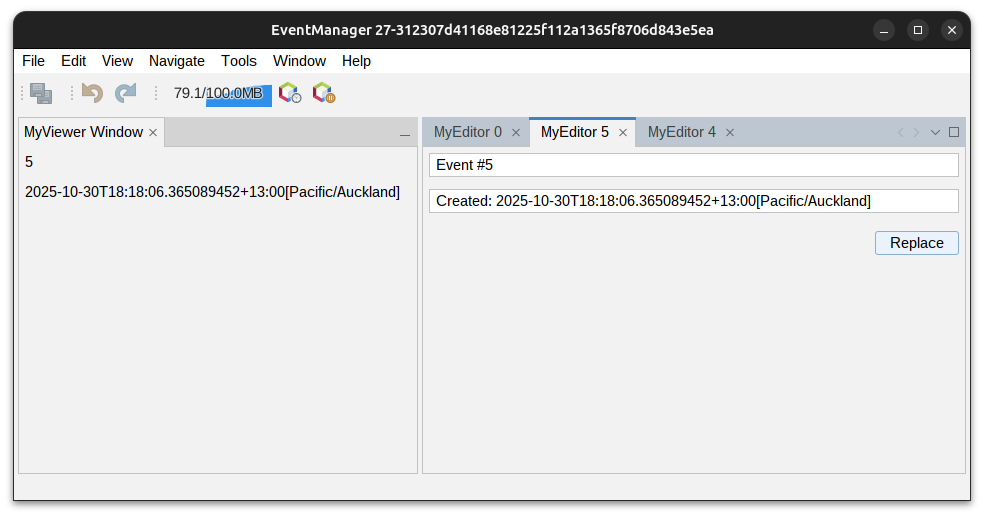
Providing More Than One Object
This works well for decoupling, but providing just one object from your component is like having a Map with only one
key and value. This technique becomes more powerful when you provide multiple objects from multiple APIs.
For example, NetBeans commonly uses context sensitive actions. The built-in SaveAction listens for a SaveCookie on
the global context - the same way your viewer listens for Event. When a SaveCookie appears (editors add one when
file content is modified but not saved), the action becomes enabled, so Save toolbar buttons and menu items become
enabled. When Save is invoked, it calls SaveCookie.save(), which causes the SaveCookie to disappear, disabling the
Save action until a new one appears.
The pattern is to provide more than one object from your component’s Lookup - different components and actions are
interested in different aspects of the object being edited. These aspects can be cleanly separated into interfaces that
those components and actions can depend on and listen for.
Next Steps
You may have noticed that some components have more detailed selection logic and even support multiple selection. The next tutorial covers how to use the Nodes API to handle that.